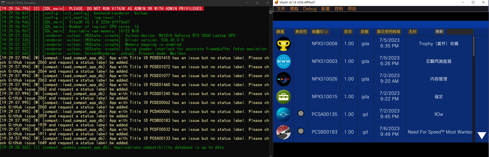
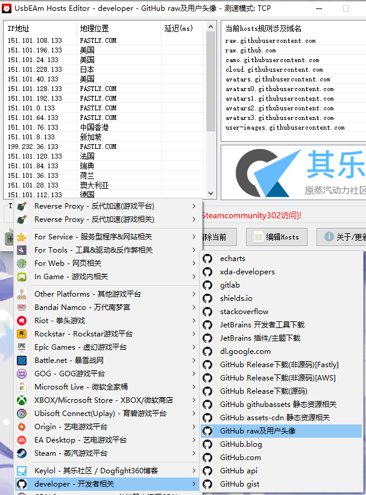
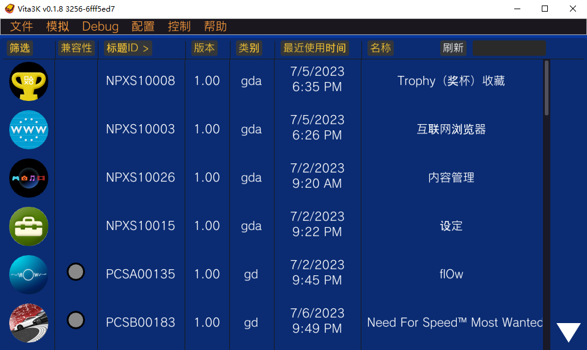
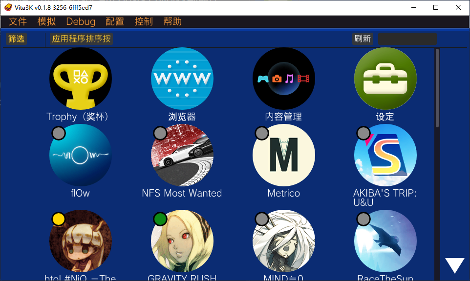
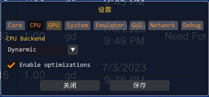

# 本文未完成
# 前言
最近想玩 PSV 游戏了，但是一来手上没有设备，二是 PSV 原生的游戏体验不见得就很好（分辨率 544P）。那么看着手上的 Windows PC，自然是来折腾模拟器了。
# vita3k 入门
vita3k 是一个开源、免费的 PS Vita 模拟器，是目前市面上（大概）唯一真正可用的 PSV 模拟器。
# 相关网址
官方网站：https://vita3k.org/
游戏兼容性列表：https://vita3k.org/compatibility.html
以上两个网站似乎使用了谷歌的 ajax，国内可能直连不上，会导致文字和内容无法加载等问题；使用魔法可以解决
下载链接：
Windows：Github Release
安卓：Github Release
Github 仓库：https://github.com/Vita3K/Vita3K
Github 兼容性报告页（issue）：https://github.com/Vita3K/compatibility/issues
提示：在 vita3k 程序内可以快速创建兼容性报告，无需自己创建 issue
# 游戏 ROM 资源下载处：
-
国内整理
- 都是百度网盘下载，如果只下汉化游戏的话开一个优化速率模式其实很快（百兆跑满），但是其他语言的大多很慢
- 老男人游戏网（需要付费注册，价格非常低可以考虑购买）：www.oldmanemu.net/ 掌机游戏 /psv
- ROM 猎人：www.yang2000ling.com/#/
- ROMS 乐园：www.roms.fun/vita
- 其他各种贴吧论坛等零散位置不一一列举
-
NoPayStation（推荐）
- 无需科学上网；
- 这个网站的原理是从 PS 官方服务器里直接获取下载链接，因此不会受到网盘限速的影响，同时也无需依赖其他用户上传，因此资源非常全面；缺点就是没有自制游戏和民间汉化版等
- 网址：nopaystation.com/browse
- 下载时，pkg 和 work.bin 文件都要下载
# 安装前提示
vita3k 确实支持安卓设备，但不要指望它能正常工作；基本上能正常运行的游戏只有 5% 甚至更少，每个设备的表现也不一致，因此不建议使用安卓设备模拟 PSV。如果有这个需求，可以考虑用电脑串流游玩。
因此，以下教程完全基于 Windows 版本。
在 Windows 上，vita3k 需要的配置也不低；虽然官网没说需要 vulkan，但根据实际体验来说 vulkan 是必须的（不用指望 OpenGL 能跑成啥样，兼容性和性能都有很大问题）。此外，AVX 指令集和 4-8G 内存也是需要的。
# 安装软件和固件
从上面的下载链接、官网或者 GitHub 里直接下载安装。软件安装也很简单，一路 next 就行。不过需要注意安装路径里不要带空格和中文，防止出现问题。
软件启动后需要安装 psv 环境，以及需要下载固件；这里直接跟随这篇教程即可（固件也在里面可以下载）：croden1999.github.io
（这个教程其实是挺完整的，但有些地方说明不清晰，所以我写了这篇文章）
# 初次启动配置
安装完成后，打开软件；Vita3K 会同时创建两个窗口，一个是命令行终端，另一个是 GUI 本体。

GUI 界面在几十秒不操作就会进入锁屏界面，点一下就能恢复。
命令行窗口可以直接最小化不管，但开着可以方便检查运行是否出错。
# 自动更新
软件启动后，首先会自动检查更新，包括兼容性数据库更新和软件本体更新。它们需要连接到 GitHub 的服务器才能进行，并且无法通过 steamcommunity 302、FastGithub 等程序进行加速（如果开着则可能直接失败，似乎都是因为这些软件使用了自签名证书、不受信任）。
当然你可以不管更新，但是软件本体建议要尽量保持最新（可以手动下载然后覆盖文件），因为 Vita3K 仍然是一个正在积极开发的模拟器，每次更新都可能带来更好的兼容性。
兼容性列表更新失败可以忽略，但如果你像我一样有强迫症的话，可以用 UsbEAm Hosts Editor 找到最佳 hosts，然后就可以正常更新了（如图，选 raw 及用户头像；具体教程网上可以查）

最后，如果你的网络环境实在太差，也可以手动更新；
兼容性数据库：在这里下载兼容性列表，然后手动放到 vita3k\cache 里面，替换掉原有文件即可。
软件本体：在这里下载最新版本的 vita3k，把其中所有内容解压到安装目录，替换所有需要替换的文件即可。
# 软件界面

上方有一排选项按钮，这里就是我们需要主要进行配置的地方。

下面都是游戏和应用程序列表；如果显示为图中这样的网格模式，则点击配置 -> 设置 ->GUI，取消勾选 Grid Mode 即可
对于列表模式，这里会显示很多信息；从左到右分别是：游戏图标、兼容性指示、ID、版本、类型、最后使用时间、标题名称。（看顶上的那一排按钮，点哪个就可以按哪个排序）
兼容性指示是通过颜色进行的，绿色代表可玩，黄色代表可以进游戏但不能正常游戏或通关，灰色表示这个游戏在数据库里没有兼容性信息（也就是未知）。
需要注意的是，很多游戏都具有多个区域，例如日版、美版、欧版等，而它们的 ID 是不一样的；但测试兼容性的用户可能测试的是另一个区域的版本，因此这里显示灰色不代表就一定没有人测试过。
因此，对于游戏兼容性，去官方的兼容性网站里搜索才是最佳选择。
剧透：这个兼容性列表的准确性也不高，有些游戏即使说可玩也不见得一定能玩；但更多时候是显示不可玩但实际可以玩，这一般是因为软件更新太快了，测试用户可能是之前的版本
右上角有个刷新按钮，如果是 MAI 方式安装游戏或手动删除游戏则需要手动刷新列表。
# 设置核心内容
点击配置 -> 设置，这里有几个地方需要重点关注。

-
Core
里面是一些模块列表，不用管。 -
CPU
这里可以选择模拟器的 CPU 后端，Windows 上支持 Dynarmic 和 Unicorn 两种。前者是默认值；由于 Dynarmic 的性能和兼容性都比 unicorn 好很多，不建议修改。
下面还有一个 Enable optimizations 的选项，这一项通常情况下可以勾选，能提供好一点的性能；但在某些游戏里可能需要关闭才能正常游戏（例如 Entwined）。 -
GPU
这里是最重要的设置。
首先可以选择使用哪个 API，直接无脑 vulkan 就行。（即使有些游戏只能在 OpenGL 下运行，我也不建议妥协，这里的 OpenGL 性能很差并且有很多 bug）。
如果使用 vulkan，则可以选择用哪个显卡；这里有独显的选择你的独显。还有一个 Disable surface sync，如果勾选则会禁用 CPU 和 GPU 之间的同步，能给性能带来很大提升；但少数游戏可能无法运行（实际测试没有发现它影响了任何一个游戏，至少我安装过的没有）
Screen Filter 里是屏幕缩放方法，Bilinear 是双线性缩放，会导致一些像素风游戏失去像素感；换成 Nearest（邻近）即可解决。如果需要更好的缩放，可以选择 Bicubic（双立方）、FXAA（快速近似抗锯齿）或 FSR（这个是我比较喜欢的）。
下面两个滑块，第一个是控制渲染分辨率；默认 1x 就是原生分辨率 960x544，原生的好处就是更不容易出现渲染错误，但画面也比较模糊；使用 2x 就是 1920x1088，在 1080P 显示器上效果很不错，性能也不会降低太多。第二个滑块是各向异性过滤，这个一般只影响 3D 游戏，而且比较看个人习惯；我平时开 4x，但说实话我的眼睛完全看不出来它有啥用（至少在我玩过的几个 PSV 游戏里看不出）。
下面还有 Use shader cache（使用着色器缓存），启用可以提高性能，但如果游戏渲染有问题可以尝试禁用。最底下是 Clean shader Cache and log，点击可以清除着色器缓存，这对于一些兼容性不佳、需要反复尝试各种配置并重启的游戏来说很重要。 -
System
没啥设置，前面是选游戏机的 “确认” 按钮是用❌键（Cross）还是⚪（Circle），后面的 PS TV mode 是启用 PS TV 模式，这个完全不用管。 -
Emulator
另一个比较关键的设置。
第一个选项是游戏以全屏启动，这个对于确认可玩的游戏来说挺方便的，不用每次手动全屏了。
第二个是选择音频后端，可以使用 Cubeb 或 SDL，同时还能选择是否启用 NGS 支持；这里的配置没有最好一说，不同的游戏可能会需要不同的配置。
下面是一些日志级别、帧率显示、更改模拟目录等，一般不用管。 -
GUI
没啥好调的，就是一些主页显示上的设置。 -
Network 和 debug
也不用管，Network 可能会在联机游戏的时候需要配置，但我确实不想尝试在这上面联网玩游戏（Vita3K 官网也说了联机和登录 PSN 账号是不太可能的）。
# 游戏独立配置
右键任意游戏即可打开菜单，里面可以检查兼容性、卸载等。